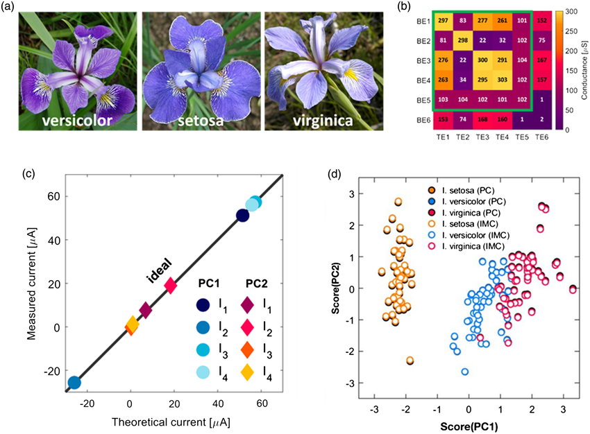
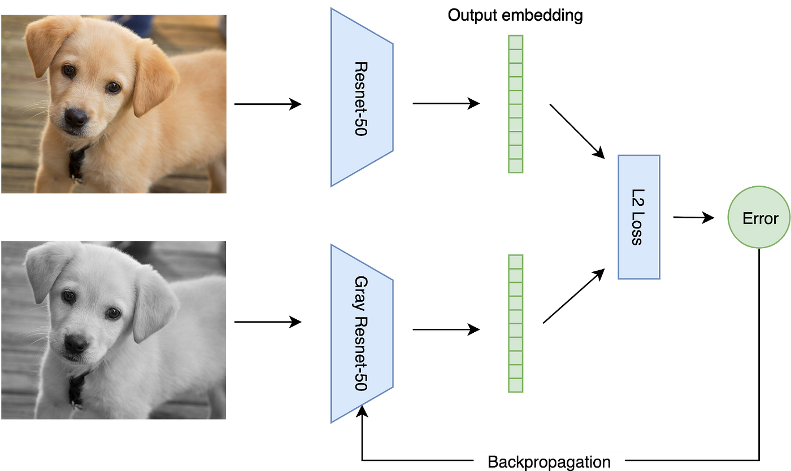
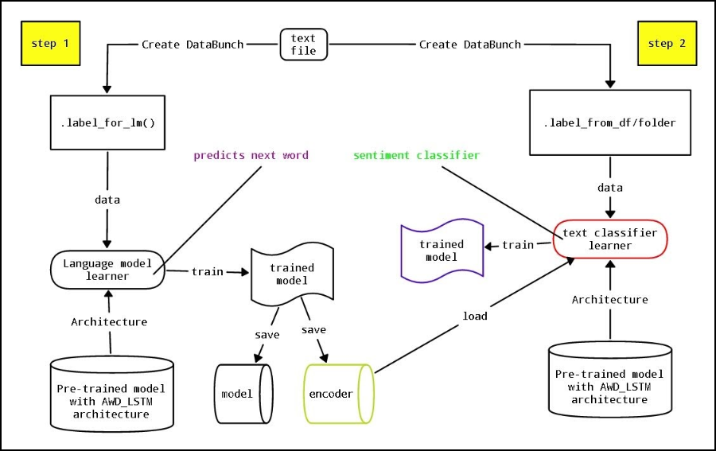

Projects
- Loss Analysis and Comparative Evaluation of
Classification Models on the Iris Dataset
In my project, I conducted a comprehensive analysis titled "Loss Analysis and Comparative Evaluation of Classification Models on the Iris Dataset."
I explored various classification models applied to the familiar Iris dataset, focusing on different loss functions. The goal was to understand and
compare model performance in accurately categorizing Iris flowers into different species. I assessed metrics like accuracy, precision, recall, and
F1-score to provide insights into the strengths and limitations of each model. This project contributes valuable findings to inform decision-making
for future classification tasks using the Iris dataset.

- CogniPet: An Advanced Pet Face
Classification System powered by ResNet-50
I developed "CogniPet: An Advanced Pet Face Classification System powered by ResNet-50." This project involves leveraging the ResNet-50 architecture
to create an advanced system for classifying pet faces. The focus is on achieving accurate and efficient categorization of different pet breeds through the
utilization of deep learning techniques. The ResNet-50 model serves as a robust backbone, enhancing the system's ability to recognize and distinguish various
features in pet faces. CogniPet aims to provide a reliable and sophisticated solution for pet face classification, offering practical applications in pet-related
industries and services.

- Quantitative Analysis of Sentiments in IMDb
Reviews: A Text Classification Approach
I conducted a project titled "Quantitative Analysis of Sentiments in IMDb Reviews: A Text Classification Approach." The study involves applying text classification
techniques to analyze sentiments expressed in IMDb reviews quantitatively. Utilizing a systematic approach, I aimed to categorize reviews into positive, negative, or
neutral sentiments, providing a deeper understanding of audience opinions. The project utilizes various machine learning algorithms to achieve accurate sentiment
classification, contributing valuable insights into the overall sentiment landscape within IMDb reviews. This research has implications for understanding audience
perceptions and preferences in the realm of movie reviews on the IMDb platform.
